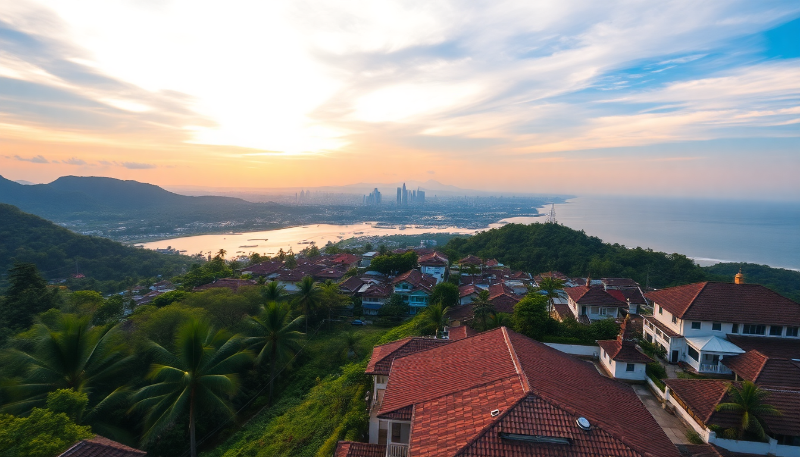

Best Cities to Visit in Indonesia: Bali, Yogyakarta, Jakarta & Lombok

I spent three weeks hopping between these four Indonesian cities, and the differences hit me hard. Bali’s tourist machine runs smoothly, Yogyakarta feels like a living museum, Jakarta chews you up and spits you out, and Lombok is Bali ten years ago. Here’s what I learned—what worked, what didn’t, and what you should actually book.
Why is Bali still worth visiting despite the crowds?
Bali is crowded, yes. But it’s crowded for a reason: the infrastructure for travelers is genuinely good. I landed in Denpasar and had a Grab to my hotel in Seminyak within 20 minutes. The island has reliable WiFi, decent roads, and enough accommodation variety that you can still find quiet corners if you know where to look.
The trick is to avoid the main drags. Ubud’s monkey forest is a zoo (literally and figuratively), and Kuta’s beach is a mess of hawkers and sunburned Australians. Instead, I spent most of my time in Canggu for the café culture and Uluwatu for the cliffs. The Tegalalang Rice Terraces are Insta-famous but worth a quick morning visit if you go before 8 AM.
- Stay: Mama’s Guest House in Ubud—cheap, clean, and the owner makes banana pancakes every morning.
- Eat: Warung Sopa in Ubud for vegan nasi campur. Skip the overpriced smoothie bowls in Canggu.
- Do: Book a sunrise hike up Mount Batur through a local operator in Kintamani. The view is real, but the tour groups are heavy—go midweek.
- Skip: The Bali Swing. Overpriced, long queues, and you can get the same photo at a rice terrace for free.
Is Yogyakarta the cultural heart of Indonesia?
Yes, and it’s not even close. Yogyakarta (locals call it Yogya) is where I felt the most connected to Indonesian history. The city runs at a slower pace than Jakarta, and the food is the best I had in the country. I spent three days here and wished I’d booked five.
The Prambanan Temple complex is stunning—Hindu architecture that rivals Angkor Wat in detail, though smaller in scale. I went at sunset and had the place mostly to myself. Borobudur, the massive Buddhist temple, is more crowded but worth the 4 AM start. The sunrise view from Punthuk Setumbu hill is the move—you see the temple emerge from the mist, and the ticket is cheaper than the official sunrise package.
- Stay: The Phoenix Hotel in the city center—colonial charm, decent pool, and walking distance to Malioboro Street.
- Eat: Gudeg Yu Djum for the city’s signature jackfruit stew. It’s sweet, savory, and costs about $1.
- Do: Take a batik-making workshop in the Taman Sari district. My shirt came out lopsided, but the process is fascinating.
- Transport: Rent a scooter or hire a Gojek driver for the day—taxis overcharge near the temples.
What is Jakarta actually like for a traveler?
Jakarta is not a vacation city. It’s a business city with traffic that makes Los Angeles look like a bike lane. I landed here mainly for a flight connection, and I’m glad I only gave it two days. But if you have to pass through, there’s good food and interesting pockets.
The Old Town (Kota Tua) has Dutch colonial buildings that feel like a dusty Amsterdam. The Fatahillah Museum is worth an hour, but the square is overrun with bike rentals and selfie sticks. Glodok, the Chinatown district, had the best street food I ate in Jakarta—especially the mie ayam (chicken noodles) from a stall on Jalan Pancoran.
- Stay: Hotel Indonesia Kempinski near Bundaran HI—central, clean, and connected to the Grand Indonesia mall for air-conditioned refuge.
- Eat: Soto Betawi H. Husein in Menteng for the beef soup. It’s rich, coconut-based, and nothing like the tourist versions.
- Do: Walk Taman Mini Indonesia Indah if you want a crash course in all 34 provinces. Cheesy but informative.
- Avoid: Taking a car anywhere between 4 PM and 8 PM. Use the MRT or TransJakarta busway instead—it’s faster and costs pennies.
How does Lombok compare to Bali?
Lombok is what Bali felt like before the resorts took over. I took a fast boat from Padang Bai (Bali) to Senggigi (Lombok) and immediately noticed the difference—quieter roads, fewer souvenir shops, and way more space on the beaches.
The south coast is where the action is. Kuta Lombok (not to be confused with Bali’s Kuta) has a long, empty beach and a handful of surf breaks. I stayed in Mawi Beach area for three nights and surfed with maybe five other people in the water. Mount Rinjani is the big trek here—two days, one night, and a sunrise that beats anything in Bali. I didn’t do it (knee issues), but every traveler I met who did said it was the highlight of their trip.
- Stay: Jivana Resort in Selong Belanak—boutique, affordable, and steps from a beginner-friendly surf break.
- Eat: Warung Jawa in Senggigi for nasi goreng with a fried egg on top. Simple and perfect.
- Do: Hire a local guide for a day trip to Bukit Merese hill. The 360-degree view of the coastline is insane.
- Transport: Rent a scooter in Mataram—it’s the best way to explore the island. Roads are rougher than Bali, so take it slow.
When is the best time to visit these cities?
Dry season (April to October) is the safe bet. I went in late May and got blue skies in Bali, Yogya, and Lombok. Jakarta was hot and humid regardless, but at least it wasn’t flooding.
Wet season (November to March) means cheaper flights and fewer tourists, but you’ll deal with afternoon downpours. I’d avoid Lombok in January—roads get muddy and the Rinjani trek closes for maintenance. Bali is still fine in the wet season if you stick to the south coast, but Ubud’s rice terraces turn into slippery mud pits.
FAQ
Is it safe to travel between these cities by road? Roads in Bali and Lombok are generally safe for scooters if you drive defensively. Jakarta’s traffic is chaotic but not dangerous if you stay in a car. Yogyakarta is the easiest to navigate on two wheels. Avoid driving at night in Lombok—street lighting is poor and potholes appear out of nowhere.
Which city has the best food? Yogyakarta, without question. The street food scene is dense, cheap, and authentic. Jakarta comes second for variety (especially Chinese-Indonesian fusion), Bali third for overpriced health food, and Lombok fourth for simple but good local warungs.
How many days should I spend in each city? Four days in Bali (split between Ubud and the coast), three in Yogyakarta, two in Jakarta (max), and five in Lombok if you want to surf or hike Rinjani. If you only have a week, do Bali and Lombok together—skip Jakarta and fly directly to Yogya from Denpasar.
Conclusion
- Bali is overrun but still functional—stick to Canggu and Uluwatu, skip Kuta and the swing.
- Yogyakarta is the real cultural hub—don’t miss Prambanan at sunset and Gudeg Yu Djum for lunch.
- Jakarta is a transit city—use the MRT and eat in Glodok, but don’t linger.
- Lombok is Bali without the crowds—surf Mawi Beach and hire a guide for Bukit Merese.